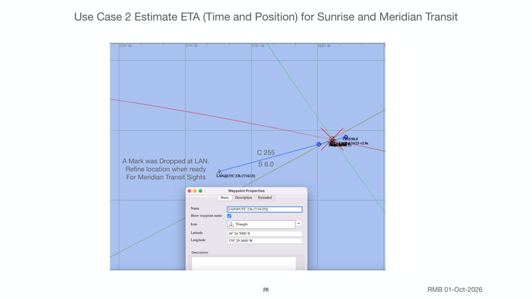

Previous | Contents | Next

Use Case 2 Estimate ETA (Time and Position) for Sunrise and Meridian Transit
C 255
A Mark was Dropped at LAN. S 6.0
Refine location when ready
For Meridian Transit Sights
26 RMB 01-Oct-2026